Catatan lengkap apa saja yang baru pada aplikasi AKLAP (Laporan Akuntansi Pemerintahan) dan keterkaitannya dengan aplikasi utama (Penatausahaan): anggaran berbasis Master Akun, modul kas lengkap (BKU/BUD, kas harian, rekonsiliasi bank), register & LPJ bendahara, hingga jurnal khusus dan cetak per jurnal.
manual-book-mahasiswa.html) yang telah memuat modul-modul pada buku ini.Pembaruan v2.0 memindahkan seluruh pengelolaan anggaran dan penatausahaan kas ke dalam AKLAP sehingga alurnya menjadi satu kesatuan: modul pagu berbasis Master Akun, modul kas lengkap (BKU/BUD, kas harian, rekonsiliasi bank), serta DISEMPURNAKAN jurnal, register, dan LPJ bendahara. Semua modul tetap terpisah per instansi (SKPD).
| No | Modul / Halaman | Status | Ringkasan perubahan |
|---|---|---|---|
| 1 | Menu AKLAP | DISEMPURNAKAN | Menu Buku Kas menjadi dropdown 5 submenu (Penerimaan, Pengeluaran, BKU/BUD, Kas Harian, Rekonsiliasi Bank) + item baru Jurnal Khusus Konsolidator, Master Akun, Anggaran (Pagu). |
| 2 | master-akun.html | Halaman Master Akun (Chart of Accounts) ringkas: tambah/ubah/hapus akun, pencarian, dan seed COA standar (COA LRA 177 akun). | |
| 3 | anggaran.html | Anggaran (Pagu) per akun Master Akun — dulu hanya bisa diisi dari Pengaturan aplikasi utama; kini di AKLAP + banner & tautan otomatis dari aplikasi utama. | |
| 4 | Buku Kas Penerimaan & Pengeluaran PPKD | DISEMPURNAKAN | Nama menu/breadcrumb menjadi Buku Kas …, tombol pindah antarbuku, rujukan silang ke Register & LPJ, perbaikan tampilan tombol Kirim ke Tanda Tangan. |
| 5 | buku-kas-bud.html | Buku Kas Umum (BUD): gabungan penerimaan & pengeluaran dengan saldo berjalan, saldo awal otomatis/manual, cetak A4 portrait, Nama PPKD & NIP BUD manual. | |
| 6 | laporan-kas-harian.html | Laporan Posisi Kas Harian (isi manual): baris transaksi SP2D/STS/Lain-lain, perubahan posisi kas, posisi kas H-1 otomatis, rekapitulasi bank. | |
| 7 | rekonsiliasi-bank.html | Rekonsiliasi Bank (isi manual): saldo menurut buku vs bank, selisih, keterangan selisih A–D dengan huruf otomatis, saran saldo buku dari Buku Kas. | |
| 8 | register-ppkd.html | Register SPP/SPM/SP2D: baris diambil otomatis dari Buku Kas Pengeluaran; mahasiswa hanya mengisi tanggal & nomor SPP/SPM/SP2D. | |
| 9 | lpj-ppkd.html | LPJ Bendahara Pengeluaran PPKD per bulan: rincian per kode rekening (hanya yang ada realisasi), anggaran, s.d. bulan lalu, bulan ini, sisa, dan rekonsiliasi kas. | |
| 10 | buku-pembantu.html | Buku Pembantu Objek: realisasi per objek/akun dengan pagu dari anggaran & sisa pagu. | |
| 11 | jurnal-khusus.html | Buku Jurnal Khusus 5 blanko (Pendapatan LO, Penerimaan Kas–LO, Pendapatan LRA, Belanja Pemda, Beban Pemda): semua kode akun diisi manual, kolom mengikuti blanko. | |
| 12 | jurnal-khusus-konsolidator.html | Buku Jurnal Khusus Penerimaan Konsolidator: kolom Tgl / No BKU / Keterangan / Debet 1.1.1.1 / Kredit 3.1.4.01.01 (RK SKPD), SKPKD diisi manual. | |
| 13 | Jurnal Umum (jurnal-umum.html) | Cetak per jurnal (voucher) + Cetak Draft dari form, dilengkapi isian Nama & NIP penandatangan. | |
| 14 | Pengaturan → Anggaran & Neraca (aplikasi utama) | DISEMPURNAKAN | Banner pemberitahuan bahwa pagu kini dikelola di AKLAP + tautan langsung membawa token (tanpa login ulang), form lama tetap tersedia untuk impor massal. |
Susunan menu sidebar AKLAP setelah pembaruan (semua tautan otomatis membawa token sehingga Anda tidak perlu login ulang):
Submenu Buku Kas ▾ berisi 5 halaman (lihat Gambar 2.1):
| Submenu | Isi |
|---|---|
| Buku Kas Penerimaan | Catat kas masuk (STS, SP2D, potongan pajak, lain-lain) — sumber data Buku Kas Umum. |
| Buku Kas Pengeluaran | Catat kas keluar (SPJ/LS, penyetoran pajak, lain-lain) — sumber data Register SPP/SPM/SP2D & LPJ. |
| Buku Kas Umum (BUD) | Gabungan penerimaan + pengeluaran dalam satu buku dengan saldo berjalan (blanko Bendahara Umum Daerah). |
| Laporan Kas Harian | Posisi kas per hari (isi manual): SP2D/STS/lain-lain, perubahan posisi kas, rekap saldo bank. |
| Rekonsiliasi Bank | Penyesuaian saldo buku vs saldo bank per bulan beserta keterangan selisih. |
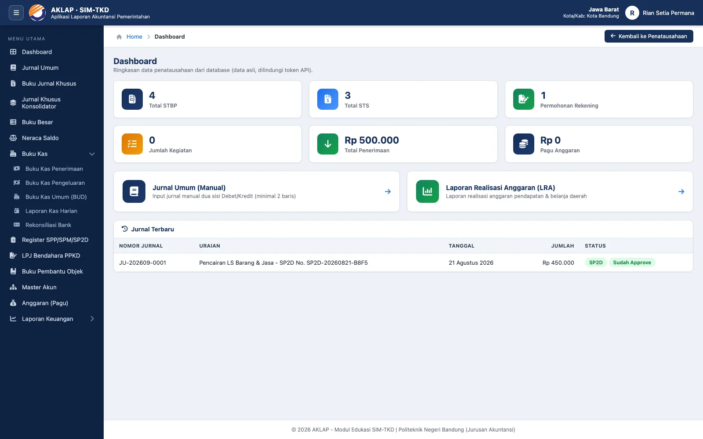
Halaman master-akun.html menjadi pusat daftar akun yang dipakai jurnal, buku pembantu, dan anggaran. Saat halaman dibuka pertama kali, sistem otomatis mengisi COA LRA standar (177 akun: pendapatan 4.x dan belanja 5.x) untuk instansi Anda.
5.1. untuk seluruh belanja).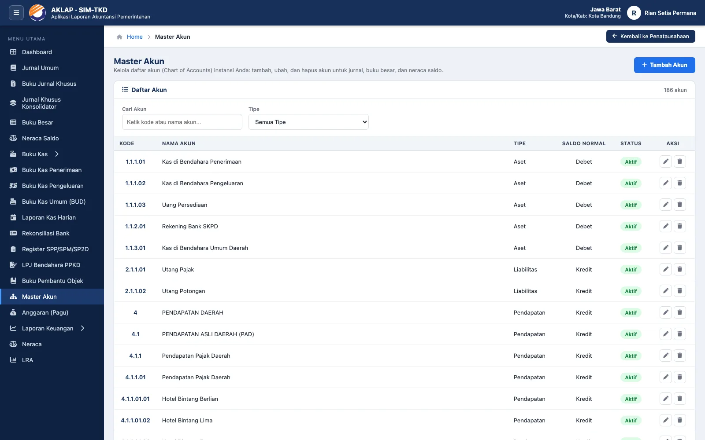
Halaman anggaran.html memungkinkan penyusunan pagu per akun langsung dari daftar Master Akun. Inilah perubahan penting: anggaran tidak lagi hanya bisa diisi dari menu Pengaturan aplikasi utama.
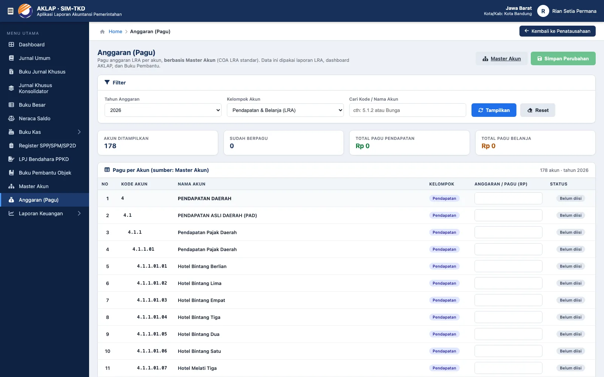
Kedua buku kas (basis tabel buku_kas) adalah pintu masuk semua transaksi kas. Yang berubah:
| Sebelum | Sesudah |
|---|---|
| Judul/menu “Buku Penerimaan PPKD” & “Buku Pengeluaran PPKD” | Menjadi Buku Kas Penerimaan PPKD & Buku Kas Pengeluaran PPKD, breadcrumb Home › Buku Kas › … |
| Perpindahan antarbuku harus lewat menu | Tombol ⇄ pindah antarbuku & rujukan langsung ke Register SPP/SPM/SP2D serta LPJ Bendahara PPKD |
| Tombol “Kirim ke Tanda Tangan” tampil tanpa warna (kelas CSS tidak ada) | DIPERBAIKI tombol berwarna & berfungsi normal |
Isian tetap sama: Tanggal, No. Bukti, Kode Rekening (datalist Master Akun/COA), Uraian, Jumlah; tabel menampilkan saldo berjalan, filter periode, Cetak (BKU), dan Kirim ke Tanda Tangan.
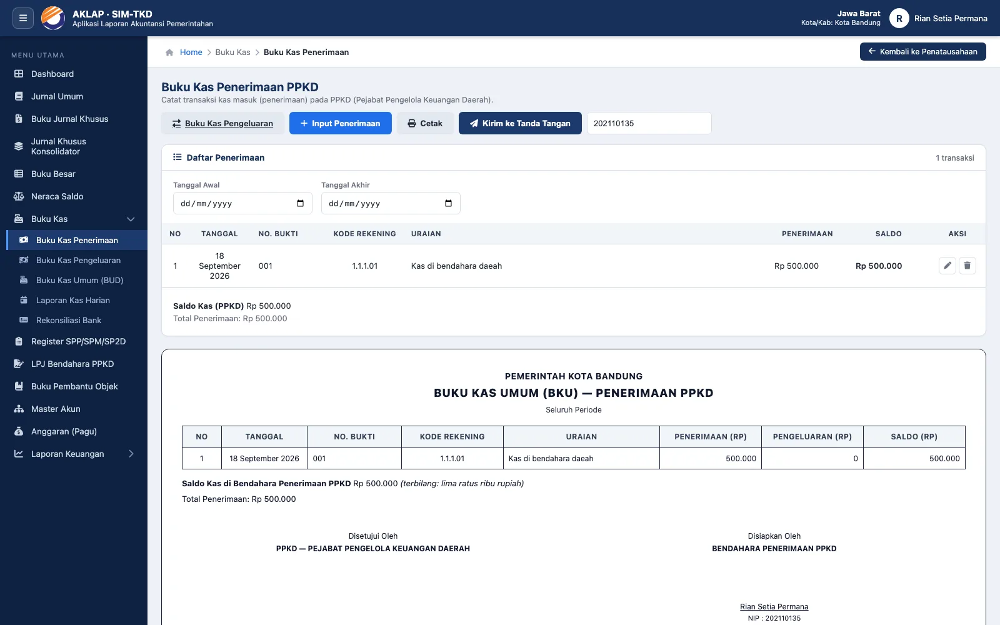
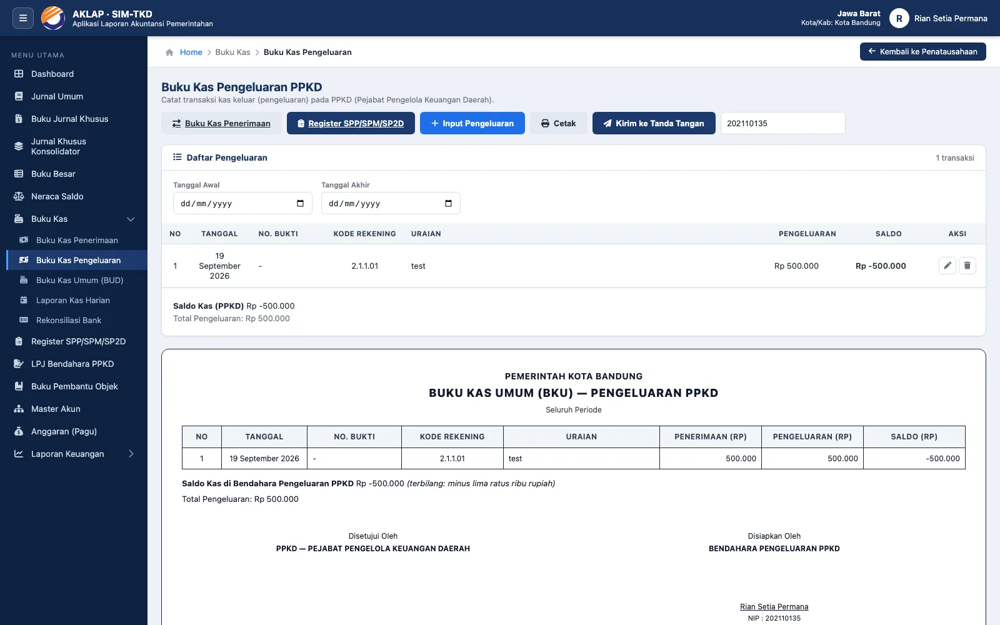
SP2D, PPN, PPh-21, PPh-22, PPh-23, dan PFK (pihak ketiga/lain-lain). Kata kunci ini yang mengelompokkan baris rekonsiliasi kas pada LPJ.Halaman buku-kas-bud.html menyajikan buku kas Bendahara Umum Daerah: satu tabel berisi penerimaan dan pengeluaran dengan saldo berjalan — persis susunan blanko “BUKU KAS PENERIMAAN DAN PENGELUARAN BENDAHARA UMUM DAERAH”.
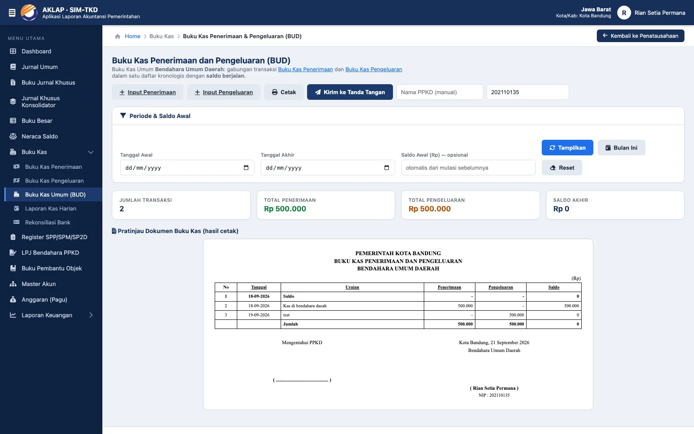
Halaman laporan-kas-harian.html mengikuti blanko “LAPORAN POSISI KAS HARIAN”: HARI, TANGGAL, dan PERIODE terisi otomatis dari tanggal (boleh diubah), diikuti tabel isi manual berkepala Transaksi (SP2D · STS · Lain-lain) · Uraian · Penerimaan · Pengeluaran.
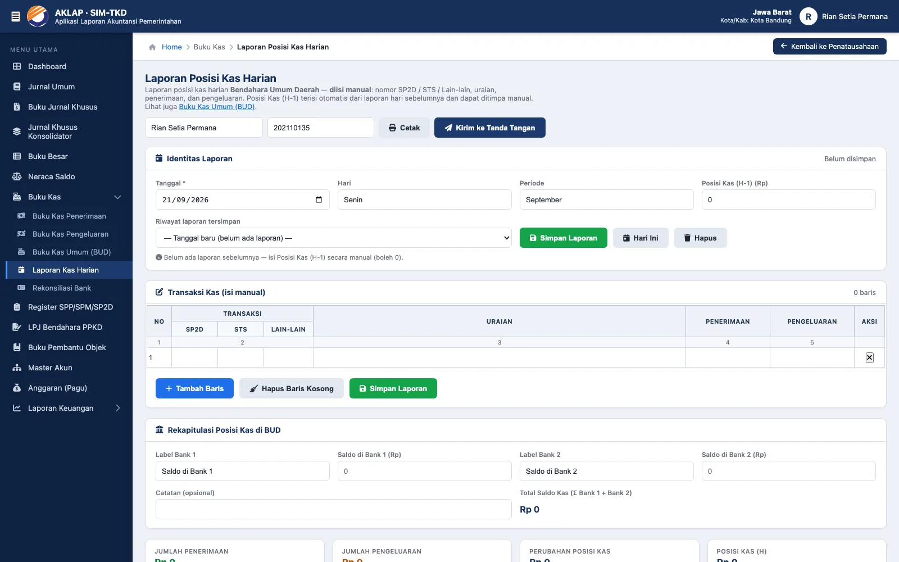
Halaman rekonsiliasi-bank.html mengikuti blanko “REKONSILIASI BANK” per bulan: baris 1. Saldo Kas menurut Buku, baris 2. Saldo menurut Bank, lalu Selisih (dihitung otomatis), dan Keterangan Selisih A–D.
| Bagian | Isi |
|---|---|
| A | Penerimaan yang telah dicatat buku, belum dicatat bank (huruf otomatis a., b., c., …) |
| B | Pengeluaran yang telah dicatat buku, belum dicatat bank |
| C | Penerimaan yang telah dicatat bank, belum dicatat buku |
| D | Pengeluaran yang telah dicatat bank, belum dicatat buku — huruf melanjutkan dari e. sesuai blanko |
0,- seperti blanko.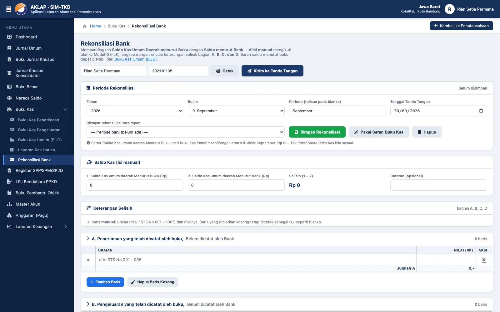
Halaman register-ppkd.html mengubah data Buku Kas Pengeluaran PPKD menjadi register resmi (blanko Modul-3E-LK Output Penata SKPKD). Kolom kode rekening, tanggal, uraian, dan jumlah terisi otomatis; yang perlu Anda isi hanya tanggal & nomor SPP, SPM, dan SP2D (plus keterangan bila perlu).
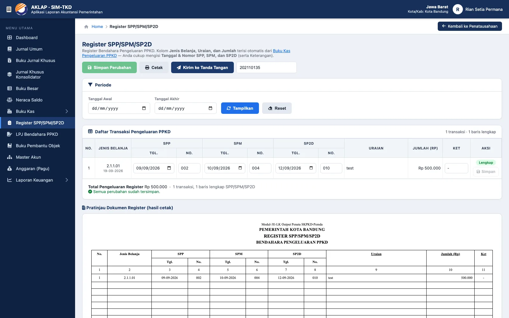
Halaman lpj-ppkd.html menyusun Laporan Pertanggungjawaban Bendahara Pengeluaran PPKD per bulan & tahun, langsung dari Buku Kas Penerimaan dan Pengeluaran.
| Bagian laporan | Perhitungan |
|---|---|
| Kolom 1–2 (Kode Rekening, Uraian) | Dari buku kas; hanya kode rekening yang sudah ada realisasinya (sesuai permintaan dosen) dan uraian diambil dari Master Akun/COA. |
| Kolom 3 Jumlah Anggaran | Pagu tahun anggaran (dari halaman Anggaran); bila kode rinci tidak ada, otomatis naik ke kode induknya. |
| Kolom 4 s.d. bulan lalu | Akumulasi pengeluaran Januari s.d. bulan sebelum bulan laporan. |
| Kolom 5 Bulan ini · Kolom 6 = (4+5) · Kolom 7 = (3−6) | Realisasi bulan terpilih, akumulasi s.d. bulan ini, dan sisa pagu. |
| Blok Penerimaan & Pengeluaran | Rekonsiliasi kas: SP2D, Potongan Pajak (PPN, PPh-21/22/23), Lain-lain dari PFK; dan sisi pengeluaran: SPJ (LS), Penyetoran Pajak, Lain-lain Pengeluaran PFK. |
| Saldo Kas | Jumlah Penerimaan − Jumlah Pengeluaran (bulan ini dan s.d. bulan ini); nilai nol dicetak 0,-. |
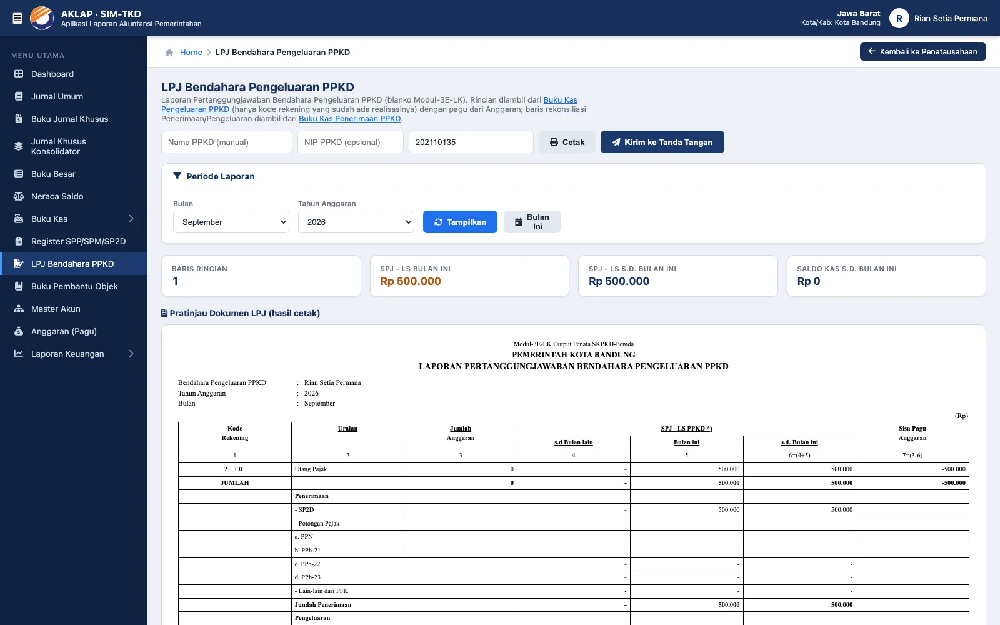
SP2D, PPN, PPh-21/22/23, atau PFK.Halaman buku-pembantu.html menampilkan realisasi per objek/akun (dari jurnal/buku kas) berdampingan dengan pagu dari halaman Anggaran, sehingga terlihat sisa pagu tiap objek — bermanfaat untuk menilai serapan anggaran sebelum menyusun LPJ.
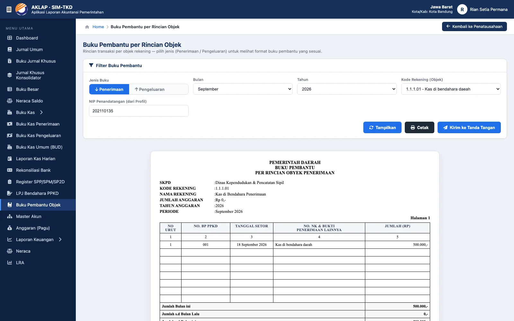
Halaman jurnal-khusus.html menyediakan lima blanko jurnal khusus yang dapat dipilih dari dropdown “Jenis Jurnal (blanko)”:
| Blanko | Kolom & satuan |
|---|---|
| Buku Jurnal Khusus Pendapatan- LO | 4 kolom piutang + 1 kolom bebas (Debet) & 4 kolom pendapatan 8.x + 1 kolom bebas (Kredit) — (Rp) |
| Buku Jurnal Khusus Penerimaan Kas – Pendapatan LO | Debet kas 1.1.1.1 & 4 kolom piutang + 1 kolom bebas — (Rp '000) |
| Buku Jurnal Khusus Pendapatan LRA | Debet epsal 3.1.2.01.01 & 4 kolom pendapatan 4.x + 1 kolom bebas — (Rp '000) |
| Buku Jurnal Khusus Belanja Pemda | 8 kolom debet (4 kode 5.x + 4 kolom bebas) & kredit 3.1.2.01.01 EPSAL — tanda tangan NIK |
| Buku Jurnal Khusus Beban Pemda | 8 kolom debet (4 kode 9.x + 4 kolom bebas) & kredit 1.1.1.1 KAS — tanda tangan NIK |
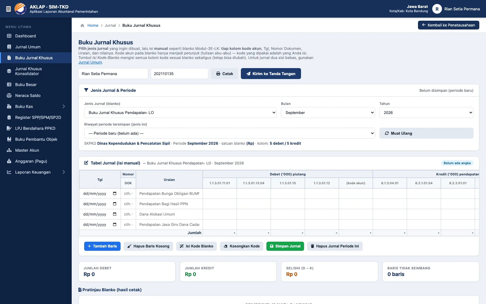
Halaman baru jurnal-khusus-konsolidator.html khusus untuk blanko “Buku Jurnal Khusus Penerimaan Konsolidator” (konsolidasi SKPD):
1.20.05 BPKD) — nilainya tersimpan per periode/bulan dan otomatis dipakai kembali.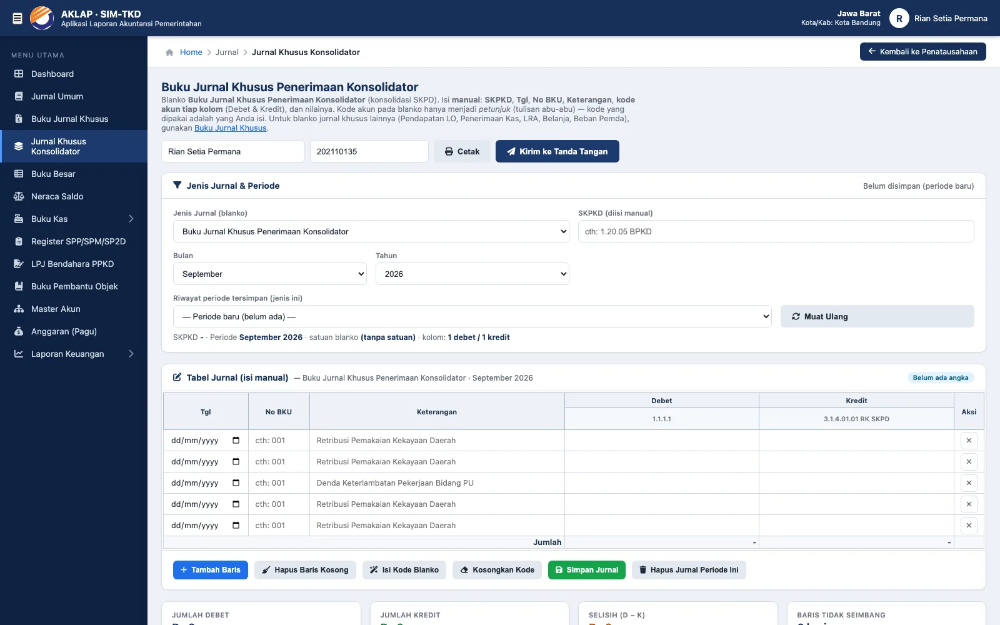
Pada halaman jurnal-umum.html, setiap jurnal kini dapat dicetak sebagai voucher tersendiri — tidak lagi harus mencetak seluruh halaman daftar.
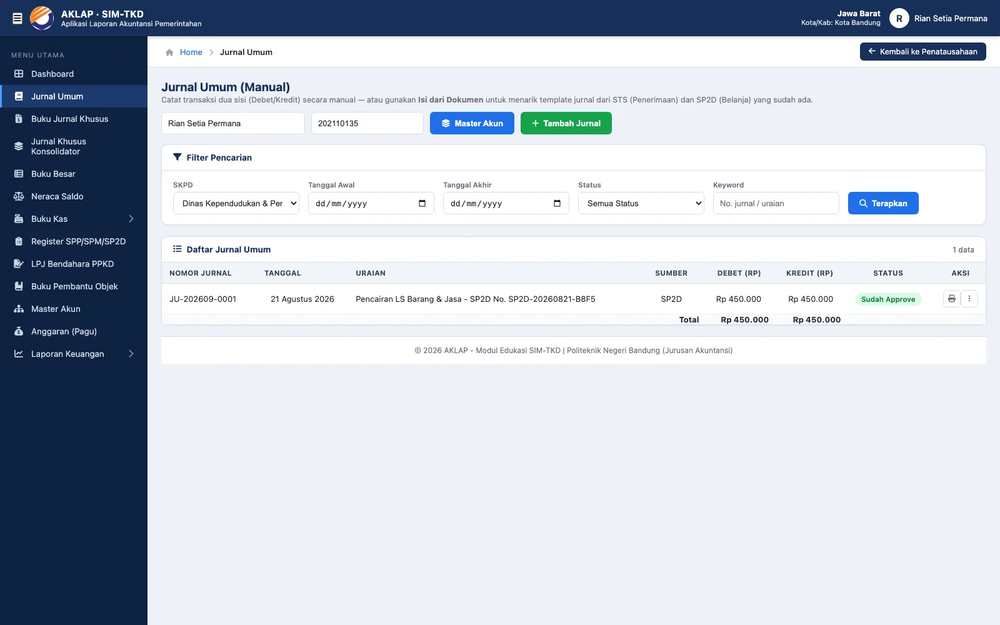
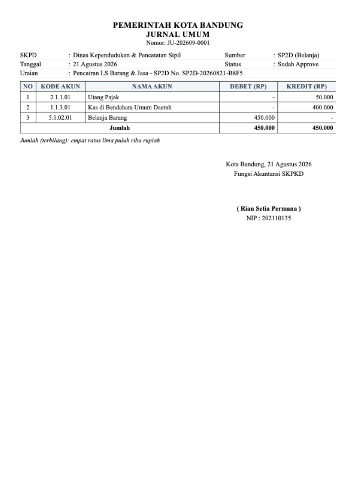
Selain modul baru, sejumlah cacat ditemukan dan diperbaiki selama pengujian. Semua perbaikan ini bersifat non-destruktif — data lama tetap utuh.
| Gejala sebelum perbaikan | Perbaikan |
|---|---|
Tombol Kirim ke Tanda Tangan pada Buku Kas Penerimaan/Pengeluaran tampil tanpa warna (kelas .btn-dark tidak pernah didefinisikan). | Gaya tombol dilengkapi → tombol tampil & berfungsi normal. |
Blok <style> pada halaman Rekonsiliasi Bank tertutup lebih awal sehingga garis tabel dan gaya blanko tidak terpakai. | Struktur tag diperbaiki; border sel dan gaya blanko kembali normal. |
| Kop dokumen Rekonsiliasi Bank tercetak hanya “KOTA BANDUNG” (tanpa kata “PEMERINTAH”). | Kop dokumen mengikuti pola modul lain: PEMERINTAH <daerah>. |
| Kolom nomor 1 2 3 4 5 pada Laporan Kas Harian keluar dari garis tabel (angka nomor kolom bergeser ke kolom lain). | Penggabungan sel kepala diperbaiki menjadi 2 baris sesuai blanko → kelima nomor kolom sejajar dalam tabel. |
Tanggal yang tidak mungkin (mis. 2026-13-99) diterima diam-diam sehingga hasil filter kosong tanpa pesan. | Validasi tanggal memakai checkdate() pada seluruh endpoint berfilter tanggal. |
| Halaman berisi isian NIP selalu mengambil ulang nilai Profil sehingga nilai yang sengaja dikosongkan terisi kembali. | Isian hanya diisi otomatis bila belum disentuh pengguna. |
| Jurnal khusus: kolom kode akun pada blanko terkunci (hanya kolom terakhir bisa diisi). | Seluruh kolom kode menjadi isian manual dengan tombol Isi Kode Blanko / Kosongkan Kode. |
| Pratinjau blanko pada Jurnal Khusus Konsolidator hanya 4 baris kosong walau blanko memuat 5 baris. | Jumlah baris kosong mengikuti jumlah contoh blanko (5 baris). |
| Blanko berlabel NIK pada halaman jurnal khusus tetap memakai placeholder “NIP”. | Label isian mengikuti jenis blanko (NIP atau NIK) secara otomatis. |
Tidak bisa login sama sekali — halaman login hanya menampilkan “Terjadi kesalahan koneksi ke server” pada basis data yang belum memiliki kolom users.nip (mis. hasil deploy lama yang belum menjalankan database/users_nip.sql). Penyebabnya api/login.php memilih kolom tersebut sehingga muncul Fatal error: Unknown column 'nip' (respons HTML, bukan JSON). | Ditambahkan penjagaan skema terpusat ensureColumn() / ensureUsersColumns() di includes/functions.php, dipanggil oleh login, register, dan profil: kolom yang belum ada ditambahkan otomatis (idempoten) sehingga pengguna bisa masuk lagi tanpa impor SQL manual. Query login kini juga dibungkus try/catch agar kegagalan basis data dikembalikan sebagai pesan JSON yang jelas. |
Setelah pembaruan, satu siklus pekerjaan mahasiswa menjadi seperti berikut:
| Tahap | Pekerjaan | Hasil / bukti |
|---|---|---|
| 1 | Transaksi di aplikasi utama (Penerimaan & Belanja) sampai ada STS dan SP2D cair. | Dokumen sumber untuk jurnal otomatis. |
| 2 | Catat kas di Buku Kas Penerimaan & Buku Kas Pengeluaran PPKD. | BKU penerimaan & pengeluaran + saldo berjalan. |
| 3 | Periksa keseluruhan kas pada Buku Kas Umum (BUD) (saldo awal otomatis/manual). | BKU BUD siap tanda tangan. |
| 4 | Lengkapi Register SPP/SPM/SP2D (hanya nomor & tanggal yang diisi). | Register resmi (blanko Modul-3E-LK). |
| 5 | Susun LPJ Bendahara Pengeluaran PPKD bulan berjalan. | LPJ + rekonsiliasi kas (saldo kas). |
| 6 | Catat Laporan Kas Harian dan buat Rekonsiliasi Bank akhir bulan. | Posisi kas harian & rekonsiliasi bank. |
| 7 | Catat jurnal: Jurnal Umum (manual / dari dokumen), Buku Jurnal Khusus, dan Konsolidator; cetak voucher per jurnal bila perlu. | Jurnal + voucher cetak. |
| 8 | Periksa Buku Pembantu Objek, Buku Besar, Neraca Saldo, lalu laporkan LRA & Neraca. | Laporan akhir tugas kejuruan. |
Bagian ini ditujukan bagi pengelola aplikasi/dosen yang perlu mengetahui perubahan di sisi server. Seluruh endpoint berada di peta.simtkd.com/api/akuntansi.php dan tetap multi-tenant (data terikat instansi pemilik token).
| Endpoint / action | Fungsi |
|---|---|
anggaran_list · anggaran_simpan · anggaran_hapus · anggaran_sinkron_master · akun_seed_coa | Pagu per akun Master Akun (baca, simpan batch, hapus, sinkronisasi, seed COA standar). |
buku_kas_umum | Buku Kas Umum (BUD): gabungan penerimaan & pengeluaran + saldo awal (otomatis/manual) & saldo berjalan. |
kas_harian · kas_harian_daftar · kas_harian_simpan · kas_harian_hapus | Laporan posisi kas harian (dokumen per tanggal, riwayat, simpan/hapus). |
rekonsiliasi_bank · rekonsiliasi_bank_daftar · rekonsiliasi_bank_simpan · rekonsiliasi_bank_hapus | Rekonsiliasi bank per bulan (bagian A–D, subtotal, saran saldo buku). |
register_ppkd_list · register_ppkd_simpan | Register SPP/SPM/SP2D dari transaksi buku kas pengeluaran. |
lpj_ppkd | LPJ Bendahara Pengeluaran PPKD per bulan (kolom 1–7 + rekonsiliasi kas + saldo kas). |
jurnal_khusus_template · jurnal_khusus · jurnal_khusus_daftar · jurnal_khusus_simpan · jurnal_khusus_hapus | Buku Jurnal Khusus & Konsolidator (5+1 blanko, kode manual, SKPKD manual). |
buku_pembantu_list · akun_list (diperluas) | Buku pembantu objek (pagu vs realisasi) & daftar akun (limit 200 → 500 agar COA utuh). |
| Tabel | Perubahan |
|---|---|
register_ppkd | Baru — 1 baris per transaksi buku kas pengeluaran (unik per SKPD + id buku kas), menyimpan tanggal & nomor SPP/SPM/SP2D + keterangan. |
kas_harian, kas_harian_item | Baru — dokumen posisi kas harian (unik per SKPD + tanggal) beserta barisnya. |
rekonsiliasi_bank, rekonsiliasi_bank_item | Baru — dokumen rekonsiliasi per SKPD + tahun + bulan beserta baris bagian A/B/C/D. |
jurnal_khusus, jurnal_khusus_baris | Baru — jurnal khusus per jenis/periode; kolom skp_label (SKPKD manual) dan slot nilai debet_1..10 / kredit_1..10. |
config/coa_lra.json | Baru — sumber tunggal COA LRA standar (177 akun) untuk seed Master Akun & Anggaran. |
| Data lama | Tabel anggaran_lra dan buku_kas tidak diubah strukturnya — modul baru membaca/menulis ke tabel yang sama sehingga modul lama (dan laporan aplikasi utama) tetap berjalan. |
CREATE TABLE IF NOT EXISTS + pastikan_kolom()) saat halaman AKLAP pertama dibuka. Untuk menyiapkan atau memeriksa skema lebih dulu (mis. deploy ke server produksi), tersedia berkas idempoten database/akuntansi_v2.sql — aman dijalankan berulang dan sudah diuji pada basis data kosong maupun basis data versi lama (kolom ditambahkan tanpa menghapus data). Tabel lama (buku_kas, anggaran_lra, akun_master, jurnal_umum, neraca_awal) tidak berubah strukturnya.| Dokumen | Ukuran |
|---|---|
| Buku Kas Umum (BUD) | A4 portrait |
| Laporan Posisi Kas Harian | A4 portrait |
| Rekonsiliasi Bank | A4 portrait |
| Jurnal Khusus Konsolidator & Voucher Jurnal Umum | A4 portrait |
| Register SPP/SPM/SP2D | A4 landscape |
| LPJ Bendahara PPKD | A4 landscape |
| Buku Jurnal Khusus (5 blanko) | A4 landscape |
?token=). Pastikan setiap laman menyediakan Kembali ke Penatausahaan seperti modul lainnya.Pendaftaran akun tidak lagi langsung aktif. Akun baru berstatus pending dan diaktifkan sendiri oleh pengguna melalui halaman aktivasi.html (memasukkan email → memeriksa nama akun & instansi → klik Konfirmasi → memasukkan kode OTP 6 angka dari email).
| Komponen | Keterangan |
|---|---|
aktivasi.html + js/aktivasi.js | Halaman & skrip aktivasi 3 langkah (email → konfirmasi data → kode OTP) dengan pewaktu masa berlaku kode dan jeda kirim ulang. |
api/aktivasi.php — action=cek | Mencari akun berdasarkan email/username; mengembalikan nama akun, instansi, username, wilayah, dan peran (email disamarkan). |
api/aktivasi.php — action=kirim_otp | Membuat kode OTP 6 angka, menyimpan hash-nya (bcrypt), berlaku 10 menit, jeda 60 detik antar kirim, maks 5 kirim / 15 menit, lalu mengirim email. |
api/aktivasi.php — action=verifikasi | Mencocokkan kode; bila benar status akun menjadi aktif dan kolom OTP dibersihkan (maks 5 kali salah tebak per kode). |
includes/mailer.php | Pengirim email OTP: SMTP (SSL/STARTTLS + AUTH LOGIN) atau mail(); konfigurasi opsional di config/mail.php (contoh: config/mail.example.php). |
users.otp_hash · otp_expired_at · otp_terkirim_at · otp_percobaan · otp_verifikasi_at | Kolom baru pada tabel users — ditambahkan otomatis oleh ensureUsersColumns() (migrasi manual: database/users_otp.sql). |
api/login.php | Akun pending ditolak login (respons JSON berisi need_activation); halaman login menampilkan tautan Aktifkan Akun Sekarang. |
login.html | Tautan tetap Aktivasi Akun (aktivasi.html) di bawah tombol Masuk, sehingga pengguna dapat membuka halaman aktivasi tanpa harus mencoba login lebih dahulu. |
logs/otp.log.php (tidak dapat dibuka dari browser) agar pengelola dapat membantu mahasiswa bila email belum sampai. Untuk uji coba lokal, set 'debug_otp' => true pada config/mail.php supaya kode ikut tampil di halaman aktivasi (jangan dipakai di server produksi). Akun lama tetap aktif — tidak ikut diverifikasi ulang.Sebelum menyerahkan tugas, lakukan pemeriksaan ringkas berikut (± 10 menit) untuk memastikan semua modul baru bekerja pada data Anda:
| No | Langkah | Hasil yang diharapkan |
|---|---|---|
| 1 | Buka Master Akun, cari kode 5.1. | Daftar akun belanja muncul (COA standar terisi otomatis). |
| 2 | Buka Anggaran (Pagu), isi pagu satu akun, klik Simpan Perubahan. | Badge berubah menjadi “Sudah diisi” dan total pagu bertambah. |
| 3 | Tambah satu transaksi di Buku Kas Pengeluaran (uraian berawalan SP2D). | Baris muncul dengan saldo berjalan; baris juga muncul di Register SPP/SPM/SP2D dan Buku Kas Umum (BUD). |
| 4 | Isi nomor SPP/SPM/SP2D pada baris register, lalu Simpan. | Badge berubah menjadi Lengkap; dokumen siap dicetak. |
| 5 | Buka LPJ Bendahara PPKD pada bulan transaksi tersebut. | Kode rekening muncul dengan nilai bulan ini; baris SPJ (LS) terisi dan saldo kas sesuai. |
| 6 | Buka Laporan Kas Harian, pilih tanggal, isi satu baris, lalu Simpan Laporan. | Posisi Kas (H) terhitung; laporan muncul di riwayat tanggal. |
| 7 | Buka Rekonsiliasi Bank, klik Pakai Saran Buku Kas, isi saldo bank. | Selisih terhitung otomatis; simpan & cetak berhasil. |
| 8 | Buka Buku Jurnal Khusus → pilih blanko → Isi Kode Blanko → isi 1 baris → Simpan Jurnal. | Badge Seimbang; blanko pratinjau terisi; cetak (A4 landscape) benar. |
| 9 | Buka Jurnal Khusus Konsolidator, isi SKPKD 1.20.05 BPKD + 1 baris, simpan. | SKPKD tampil di dokumen; saat periode dibuka ulang nilainya pulih. |
| 10 | Pada Jurnal Umum, klik ikon 🖨 di baris jurnal. | Muncul dialog cetak berisi voucher jurnal itu saja (kop, rincian, terbilang, tanda tangan) — bukan seluruh halaman. |
| Dokumen | Isi |
|---|---|
Manual Book — Edisi Mahasiswadocs/manual-book-mahasiswa.html | Panduan langkah demi langkah dari registrasi sampai laporan keuangan — telah diperbarui memuat seluruh modul pada buku ini. |
Manual Book — Edisi Lengkapdocs/manual-book.html | Termasuk kewenangan dosen (pengaturan data induk & tanda tangan elektronik) — telah diperbarui pada bagian Anggaran & AKLAP. |
| Manual Book Pembaruan v2.0 (dokumen ini) | Daftar perubahan: modul baru, perbaikan bug, catatan teknis, dan cara verifikasi. |